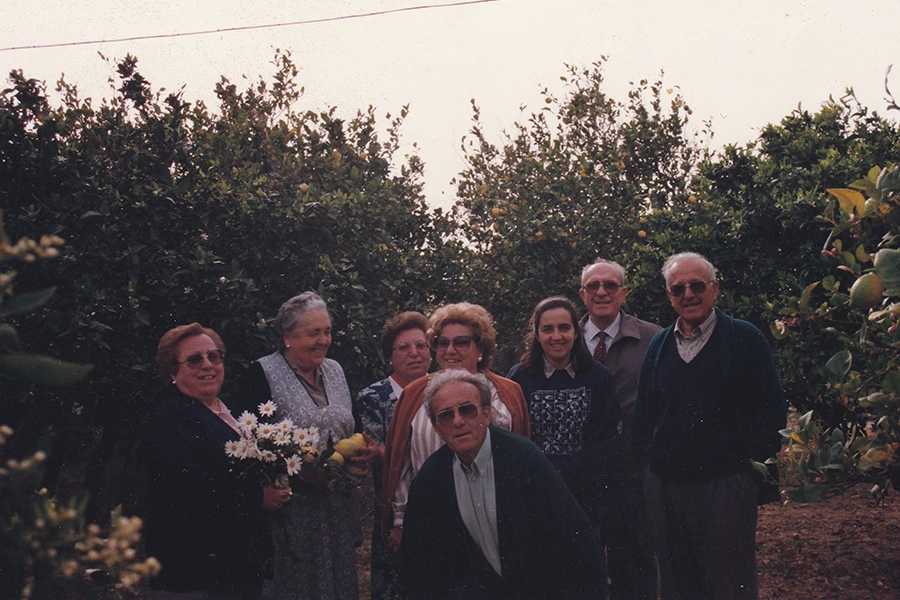
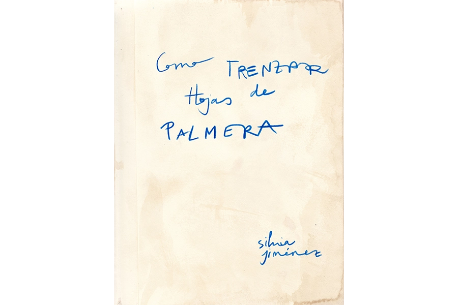
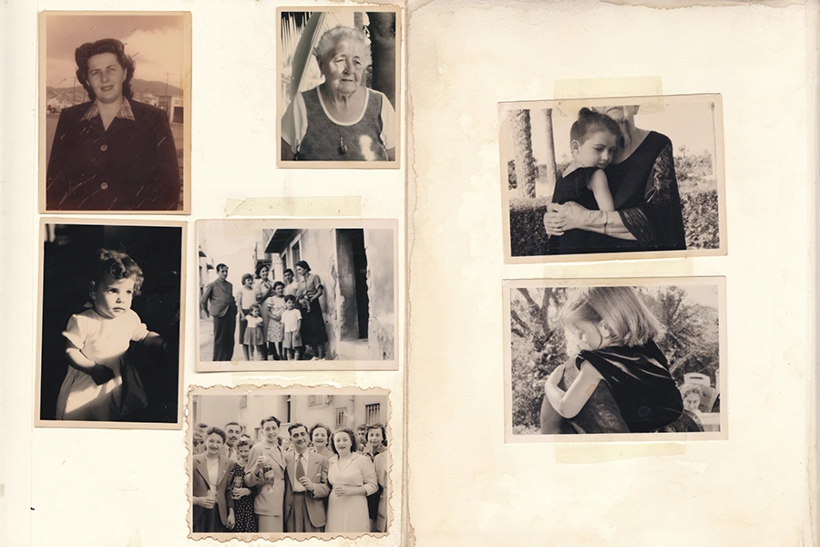
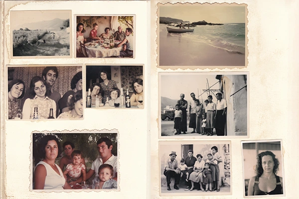
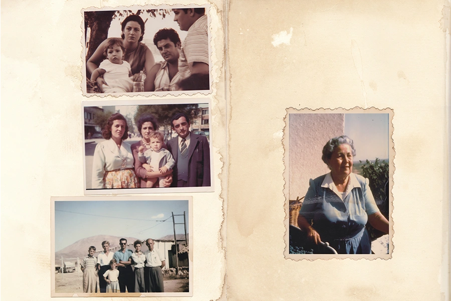

Como trenzar hojas de palmera

Como trenzar hojas de palmera

Como trenzar hojas de palmera

Como trenzar hojas de palmera

Como trenzar hojas de palmera
2023-2024
“Como trenzar hojas de palmeras” es un trabajo de revolver, escuchar
historias y recuperar la memoria de la familia que la autora no ha
podido conocer o que no logra recordar.
Surgió al ver una foto de su bisabuela, fallecida cuando ella tenía 7
años. Al preguntar a su familia sobre ella y no encontrar fotos,
decidió crear imágenes con IA. Así, reconstruyó su vida, los recuerdos
perdidos de los que no se fotografiaron, hasta que los imaginó. Ahora
son parte de la historia de su familia.
El trabajo gira en torno a crear ese álbum familiar en el que poder
plasmar esos recuerdos para evitar que caigan en el olvido.